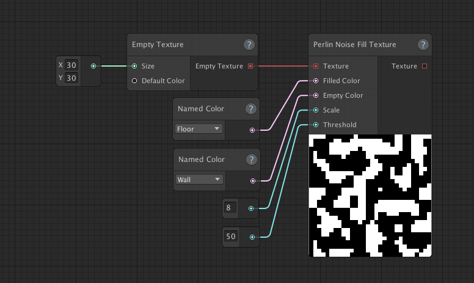
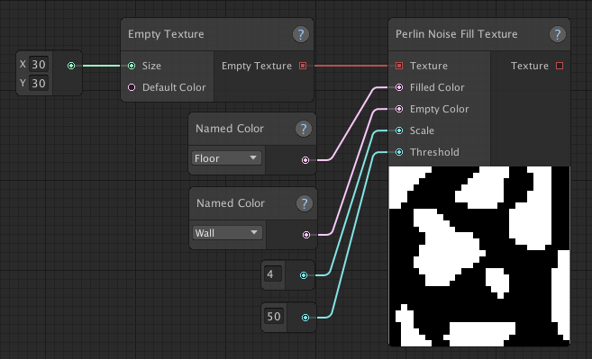
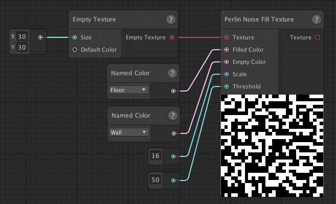
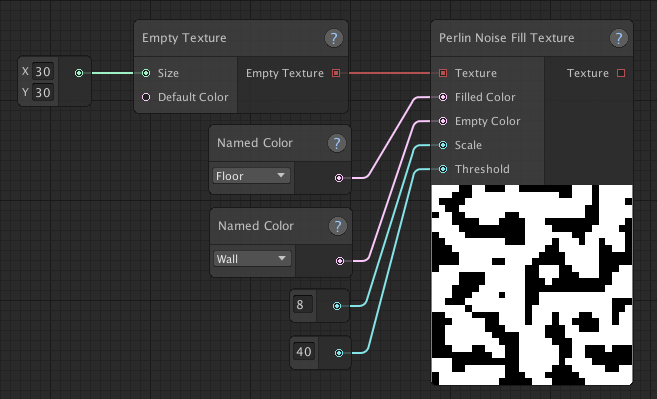
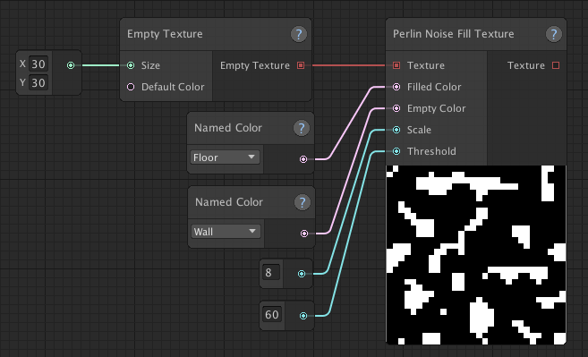
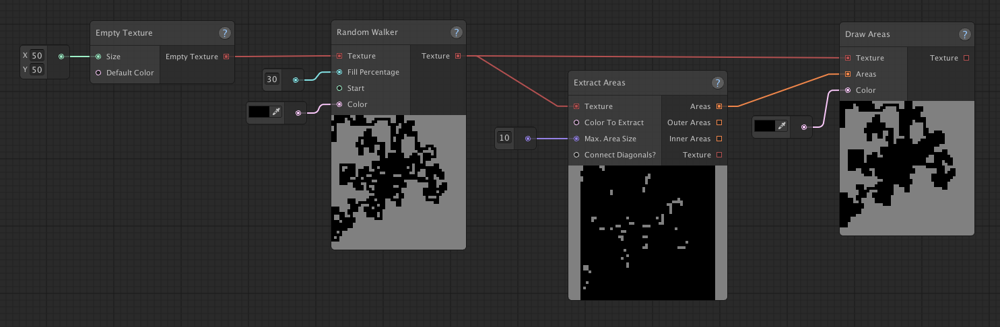
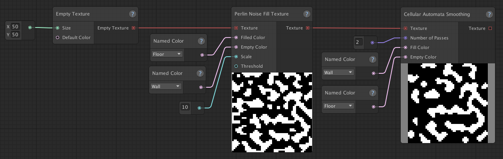
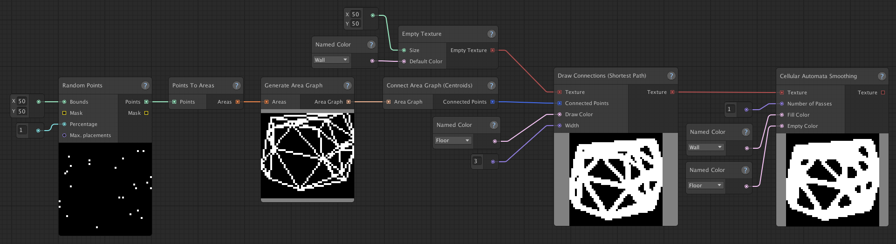
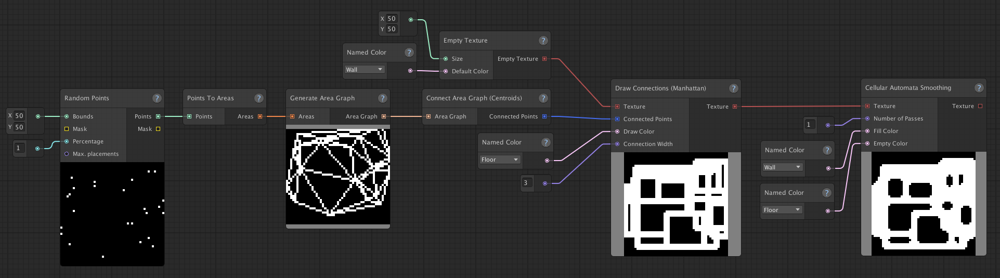

Cave-like maps
There are many different ways to create cave-like patterns for your maps. We will look at three of them: Cellular Automata, Perlin noise and Waveform Function Collapse (WFC). You'll also learn how to use these (and other) techniques to create your own unique cave patterns.
Cellular Automata
You can create cave-like patterns by connecting a Randomly Fill Texture and a Cellular Automata Smoothing node. Please check out the "Adding more nodes" section of the "Creating your first map generator" tutorial to learn how.
If you want to know more about the Cellular Automata Smoothing node, you can find it in the node index.
Perlin Noise
Another way to create cave-like patterns is by generating Perlin noise.
Here is a basic example graph: 
Adjusting scale
Changing the scale basically allows you to create a more zoomed in/out looking pattern.
Here's what different scale values look like.
| Lower scale (4) | Higher scale (16) |
|  |  |
Adjusting threshold
Threshold determines which of the two colors is used for each pixel. A noise value is calculated for each pixel between 0 and 100. A pixel with a value above the threshold will gets assigned the "Filled Color", a pixel below the threshold gets assigned the "Empty Color". If no threshold is specified, the default value 50 is used.
In short, increasing the threshold will make it so more pixels have the "Empty Color", whereas reducing the threshold will make it so more pixels have the "Filled Color".
| Lower threshold (40) | Higher threshold (60) |
|  |  |
Reusing Perlin noise data for multiple thresholds
You might want to use the same Perlin noise data to draw different colors at different thresholds. For example, you might want everything below 20% to be water, above 20% to be grassland and above 80% to be mountains. For this reason, the Noise Data out port and the Draw Noise Threshold were added. Please take a look at the node index, to see how this node works.
If you want to know more about the Perlin Noise Fill Texture node, you can find it in the node index.
Random Walker
Another way to generate cave-like patterns, is by using the Random Walker node. Basically, this uses an algorithm that moves in random directions around the texture, coloring the pixels. If you want a more detailed description of how it does this, please check out the node index.
This node can be used to create patterns that look like interconnected cave systems. One of the nice features of this approach is that you don't have to worry about connecting the different areas. Also, the way the caves are connected by the random walker tends to look more organic than if you would draw connections separately.
Other than the fill percentage it doesn't really have any customization options though. But you can combine it with other nodes to create different results, of course.
Here's an example:  The Random Walker randomly walks around the texture and colors the visited pixels black, until it's filled 30% of the texture. The Extract Areas and Draw Areas nodes are used to remove some of the "rubble".
Waveform Function Collapse (WFC)
WFC is an algorithm that's able to generate all kinds of random patterns based on a provided sample texture. To learn more about the WFC node, please check out the node index.
There's also a tutorial about sample-based maps, that will go into greater detail about how WFC works.
By providing a cave-like sample texture, WFC can be used to generate all kinds of cave-like maps.
Here is a basic example graph:

Here is the sample used (cave-sample):

Differences
Which approach to use, really depends on the kind of result you're looking for.
The cellular automata, perlin noise and random walker approaches tend to be less heavy on performance than the WFC approach. These approaches also don't require you to provide a sample texture, like WFC does. However, because you're able to feed your own sample to WFC, you'll be able to generate very specific patterns (cave-like or otherwise).
Perlin noise tends to give a more uniform result than the cellular automata approach. The advantage being that you're guaranteed to have the texture more evenly populated with a cave pattern, but this will also mean that the results tend to look more alike than the cellular automata approach.
Other approaches
While these approaches are a good starting point, they are by no means the only way to create cave-like maps with Map Graph.
For example, you could combine these different approaches. Maybe you like the way Perlin noise is guaranteed to fill your texture evenly and you like the smooth results of the cellular automata approach. There's nothing stopping you from connecting a Perlin Noise Fill Texture node to a Cellular Automata Smoothing node to get the best of both worlds.
The number of approaches you can take are many and experimentation is very much encouraged!
Examples
Here are just a couple of example graphs you could make, by combining different techniques in more complex ways.
 Caves are generated using Perlin noise. The Cellular Automata Smoothing node, makes them nice and smooth.
 A bunch of random points are connected together. The connections are drawn as floors on top of a texture that's initially completely filled with walls. Cellular Automata is then used to create nice round corners.
 A variation of the graph above. Instead of using the Draw Connections (Shortest Path) node, it uses the Draw Connections (Manhattan) node, resulting in more square looking shapes.